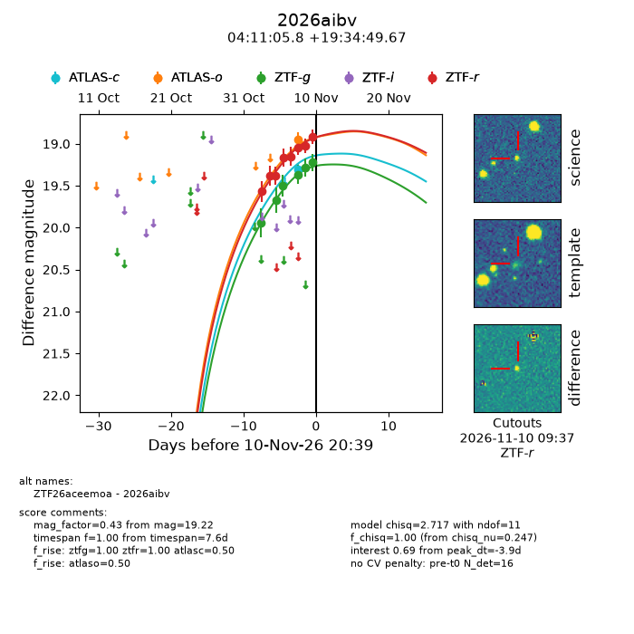
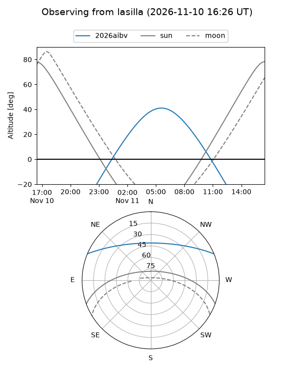
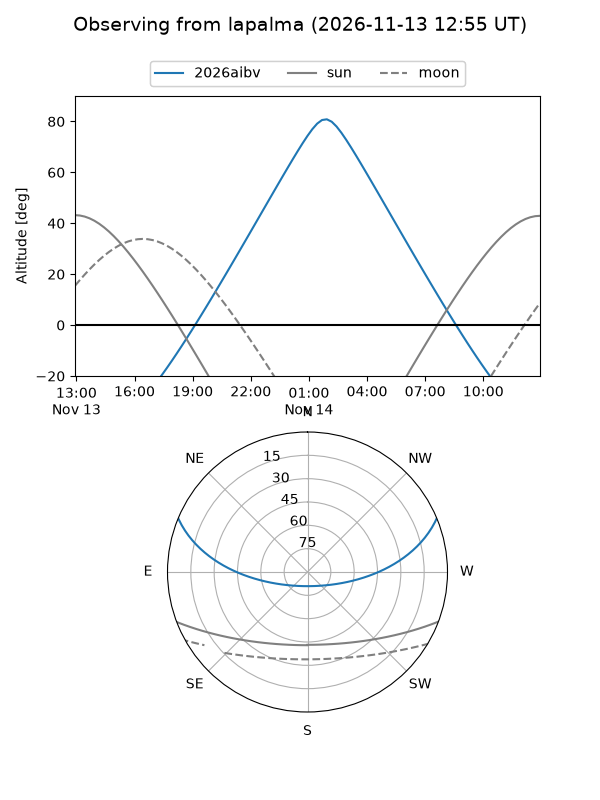
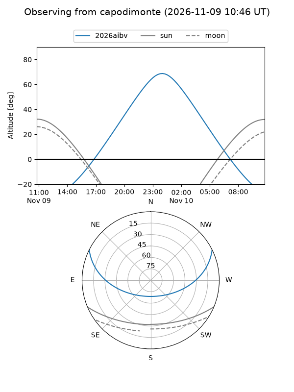
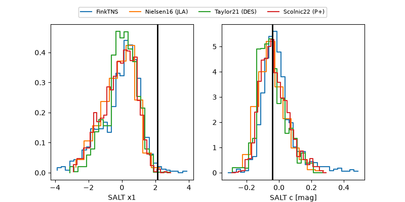

2026aibv
Target 2026aibv at 2026-11-10 20:42
Aliases and brokers:
FINK-ZTF: ztf.fink-portal.org/ZTF26aceemoa
Lasair-ZTF: lasair-ztf.lsst.ac.uk/objects/ZTF26aceemoa
ALeRCE-ZTF: alerce.online/object/ZTF26aceemoa
YSE-PZ: ziggy.ucolick.org/yse/transient_detail/2026aibv
TNS name: wis-tns.org/object/2026aibv
Direct TNS query: direct search
alt names
ZTF26aceemoa (ztf,fink_ztf)
2026aibv (tns,yse)
Coordinates:
equatorial (ra, dec) = 62.7743,+19.58047
equatorial (HMS+DMS) = 04:11:05.83,+19:34:49.67
galactic (l, b) = (174.3582,-22.77614)
Flags:
peak dt: -3.9
Photometry:
last atlasc=19.31, atlaso=18.95, ztfg=19.22, ztfr=18.92
1 atlasc, 1 atlaso, 6 ztfg, 8 ztfr detections
Lightcurve

Visibility



Additional plots
